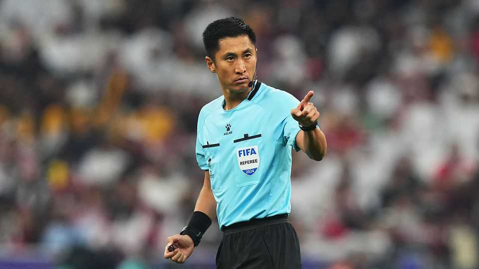

Ma Ning will proudly represent China at the World Cup
The referee is succeeding where the men’s national team is not
June 4th 2026

WITH A PHOTO from an aeroplane window and the caption “I’m ready, are you ready?”, Ma Ning, a Chinese football referee, announced his departure for Miami and this year’s World Cup. China’s footballers will not be joining him. The men’s team has not qualified for a World Cup since 2002, when it crashed out without scoring a goal. Though the country struggles to get its players to football’s biggest tournament, it has become unexpectedly adept at producing referees.
Mr Ma hails from Liaoning, in China’s rust belt. The province was once the heartland of heavy industry and state-owned enterprises, earning a reputation for bureaucracy and respect for procedure. Whether by temperament or upbringing, Mr Ma, nicknamed “Card Master”, has made a career out of taking rules seriously. Supporters celebrate his willingness to punish offenders regardless of status or consequence; critics say he likes the limelight. Few referees attract as much scrutiny.
His breakthrough came in 2015, when he issued nine yellow cards and three red ones in a single match. Just last month supporters of Shanghai Port, a club in China’s top league, marked Mother’s Day by chanting insults about his mother. The abuse quickly spread online but Mr Ma appeared untroubled.
The hostility has done little to impede his notable ascent. In 2024 he became the first Chinese referee to oversee an Asian Cup final. And football officials in China have defended his decisions from backlashes. It will be his second consecutive appearance at the World Cup and may mark his debut as a referee at the tournament (previously he served as a fourth official).
The strangest consequence of Mr Ma’s rise is the faith some supporters place in his impartiality. Unlike referees who may worry about the repercussions of their decisions for their own national teams in the World Cup, Mr Ma faces no such dilemma. China is unlikely to appear in the tournament soon. He has little to lose and much to gain. Despite being 46 years old, he does not seem to be eyeing retirement.
As sponsorship deals accumulate and followers flock to his newly created social-media accounts, Mr Ma’s success has become a story in its own right. Chinese men’s football, despite years of reform and personal backing from Xi Jinping, remains synonymous with corruption scandals, administrative dysfunction and chronic underachievement. For a country of 1.4bn people, China’s most successful representative in world football is not scoring goals. But he’s meeting his own regardless. ■
Subscribers can sign up to Drum Tower, our new weekly newsletter, to understand what the world makes of China—and what China makes of the world.